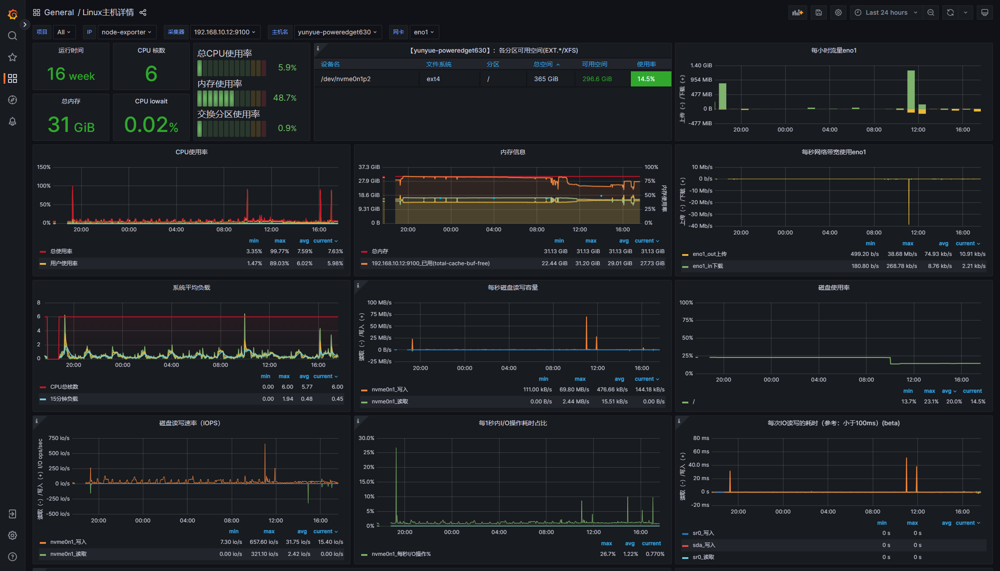

有效版本
- Jenkins： 2.418
- Grafana： 9.4.7
- Prometheus： 2.47.0
概述
Grafana、Prometheus 和 Node Exporter 是一组常用于监控和可视化系统性能数据的开源工具。以下是它们的简要介绍：
- Prometheus：
- Prometheus 是一款开源的监控和警报工具，最初由SoundCloud开发，并于2012年开源发布。
- Prometheus 采用多维度数据模型，可以收集、存储和查询时间序列数据。它支持灵活的查询语言PromQL，使用户能够从监控数据中提取有用的信息。
- Prometheus 具有强大的警报管理功能，可以配置警报规则并发送通知，以便在出现问题时及时采取行动。
- 该工具适用于云原生环境，可以轻松地与容器化应用和微服务架构集成。
- Node Exporter：
- Node Exporter 是一个Prometheus的插件，用于收集并暴露有关操作系统和硬件性能指标的数据。
- Node Exporter 可以在被监控的主机上运行，定期抓取诸如CPU使用率、内存使用、磁盘空间、网络流量等各种系统和硬件统计信息。
- 这些数据以Prometheus的指标格式暴露，可以被Prometheus服务器收集和存储。
- Node Exporter 为Prometheus提供了关于被监控主机的详细信息，使您能够实时监测和分析系统性能。
- Grafana：
- Grafana 是一款流行的开源数据可视化工具，用于创建仪表盘和图表，用以展示来自各种数据源的数据。
- Grafana 支持多种数据源，其中包括Prometheus。这使得您可以轻松地将Prometheus收集的数据可视化，创建漂亮的仪表盘和图表以监控系统性能。
- Grafana 还具有丰富的可视化选项、警报功能和面板模板，可以自定义数据的展示方式并设置警报规则。
- Grafana 是一个高度可扩展的工具，广泛用于DevOps和运维团队，以及需要实时监控和数据可视化的各种应用场景。
通常，这三个工具一起使用，构建一个完整的监控解决方案。Node Exporter用于采集主机级别的数据，Prometheus用于存储和查询数据，而Grafana用于创建仪表盘和图表，以便用户可以直观地查看和理解监控数据。这种组合使您能够实时了解系统性能，及时发现问题，并采取必要的措施来维护和优化您的应用程序和基础设施。
总体步骤
1、创建Grafana、Prometheus、node exporter容器
2、配置
3、验证
1、创建容器
使用下面的compose脚本可以一键拉起三个容器，这里需要注意的是/opt/docker_data/prometheus/prometheus.yml改文件需要提前创建好，内容可以设置为如下
1 | global: |
compose.yaml
1 | version: "1" |
容器创建好之后可通过访问目标服务器 9090以及3000接口验证是否部署成功。
2、配置
2.1 JENKINS的配置
Jenkins的配置主要有两部分安装插件、配置数据源
A.安装插件
在插件市场找到[Prometheus metrics plugin](https://plugins.jenkins.io/prometheus)插件，安装后重启Jenkins。完成后访问http://yourip:jenkinsport/prometheus可以看到数据证明安装成功。其中/prometheus/若是需要修改可以通过Jenkins->系统管理->系统配置中的Prometheus节点更改。
B.配置数据源
修改prometheus.yml配置，追加如下内容。
1 | - job_name: 'jenkins' |
2.2 Spring应用的配置
1.确保项目中引入了准确的依赖
1
2io.micrometer:micrometer-registry-prometheus,
org.springframework.boot:spring-boot-starter-actuator
2.配置 Actuator 和 Micrometer：在 Spring Boot 应用程序的配置文件（例如 application.properties 或 application.yml）中添加以下配置，以启用 Actuator 和配置 Prometheus 注册器：
1 | management: |
这将开启 Actuator 和 Prometheus 监控端点，并允许 Prometheus 抓取指标。
3.启动应用程序：启动您的 Spring Boot 应用程序。
4.访问 Prometheus 指标端点：通过浏览器或 curl 等方式访问 Prometheus 指标端点，默认情况下它位于 http://yourip:port/projectname/actuator/prometheus。 这将显示应用程序的监控指标数据，以 Prometheus 格式呈现。
5.配置 Prometheus：在您的 Prometheus 配置文件中，添加一个 job 来抓取 Spring Boot 应用程序的指标。例如：
- job_name: 'spring-boot-app'
static_configs:
- targets: ['yourip:port']
6.重新加载 Prometheus 配置：在 Prometheus 服务器上重新加载配置，以开始抓取 Spring Boot 应用程序的指标数据。
7.查询和可视化:：使用 Prometheus 提供的查询语言 PromQL 来查询和可视化监控数据，或将 Prometheus 与 Grafana 等可视化工具集成，以创建漂亮的监控仪表盘。
通过这些步骤，您的 Spring Boot 应用程序将与 Prometheus 集成，您可以监控和可视化应用程序的各种指标，以便及时发现问题并进行性能优化。请根据您的项目需要进一步调整配置和监控参数。
2.3 Grafana的配置
Grafana的配置主要有两部分添加数据源以及配置看板。
A.添加数据源
可通过点击首页上的Add your first data source或左下角齿轮data sources添加。添加时选择Prometheus数据源，地址就填写Prometheus的地址。
B.配置看板
由于看板比较复杂，可以在官方看板市场[Dashboards | Grafana Labs]选择一个别人配置好的。
比如主机监控我使用了id为8919的面板，jenkins使用了9964的面板，搜索到心仪的面板后可以通过点击Dashboards菜单下的Imports直接输入面板ID导入。
